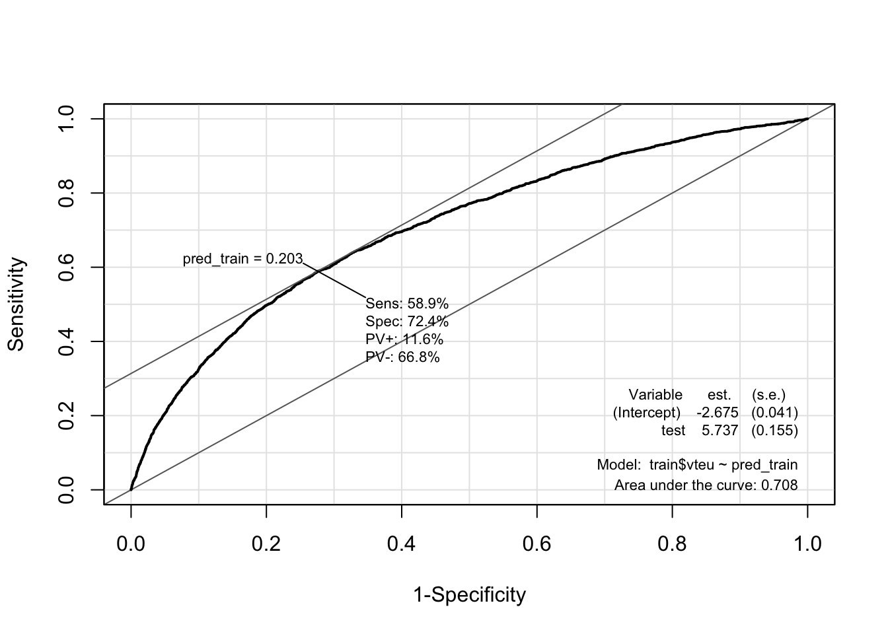
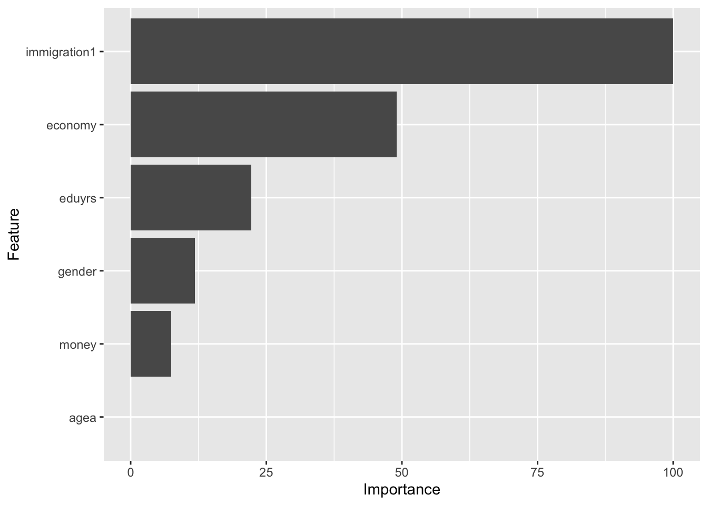
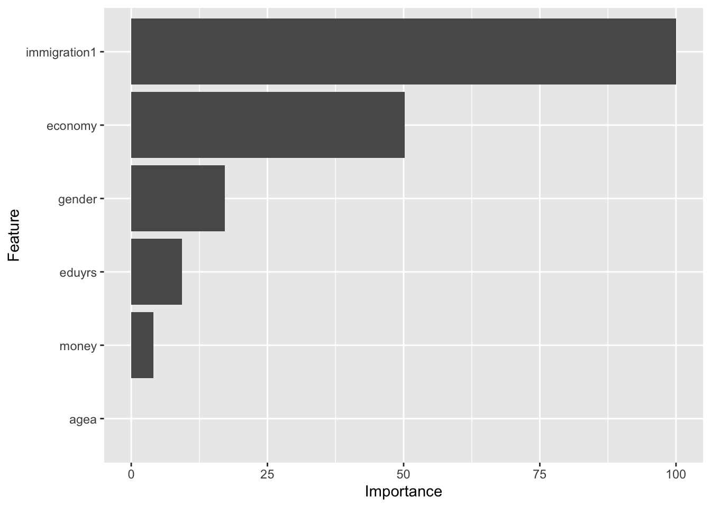
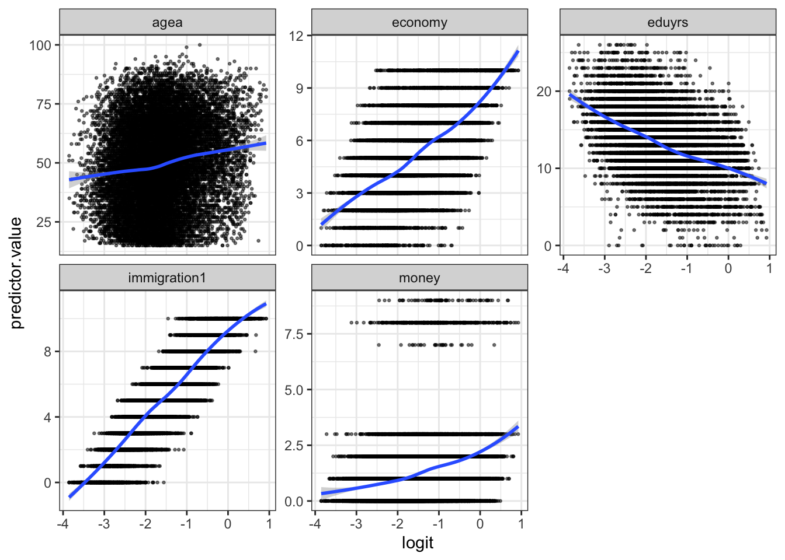
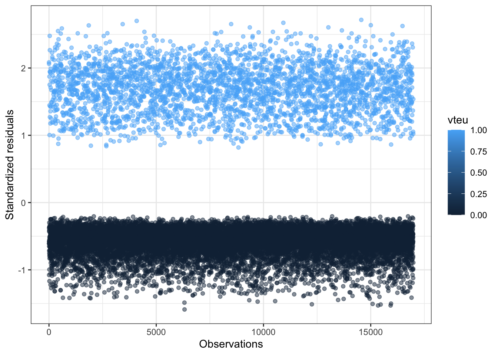
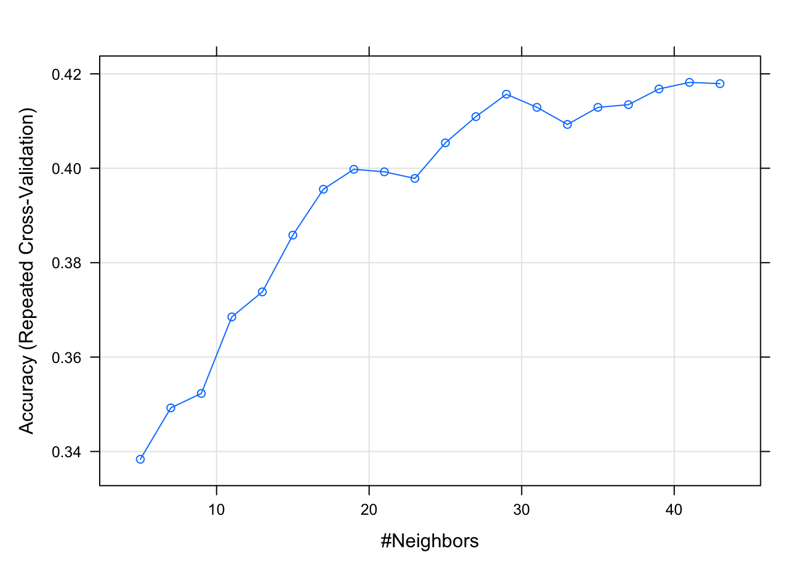

library(tidyverse)
library(stargazer)
load("data/ess_teaching.rda")Supervised learning: Classification
Introduction to classification
Classification is a fundamental task in machine learning that involves assigning predefined categories or labels to input data based on their features or attributes. The goal is to build a model that can learn from labeled examples to accurately classify new, unseen instances into the appropriate categories.
In classification, we have a set of data instances, also known as samples or observations, with associated labels or class memberships. The task is to learn a mapping between the input features and the corresponding labels, allowing the model to make predictions on new, unlabeled instances.
Each data instance has a set of features or attributes that describe its characteristics. These features can be numerical, categorical, or even textual, depending on the nature of the problem. For example, in a spam email classification task, the features could be the presence or absence of certain keywords or the length of the email. In this example, imagine input words that would detect and delete spam e-mails. How often would those input words detect and delete a regular email vs how often would those input words detect and delete spam e-mails.
The target variable or labels represent the predefined categories or classes that we want to predict for new instances. In binary classification, there are two classes, such as “spam” or “not spam.” In multiclass classification, there can be multiple classes, such as “cat,” “dog,” or “bird.” In the example below, we will be focusing on a binary classification between “wanting to leave the EU” and “not wanting to leave the EU” – or if you will “Remain” vs “Leave”.
To build a classification model, we need training data, where each instance is associated with its correct class label. This labeled data is used to train the model, allowing it to learn the patterns and relationships between the features and the corresponding labels.
Once the model is trained, it is evaluated on a separate set of test data that was not used during training. This allows us to assess the model’s performance and generalization ability. Common evaluation metrics for classification include accuracy, precision, recall, F1-score, and area under the ROC curve (AUC-ROC).
After the model has been evaluated and deemed satisfactory, it can be deployed to make predictions on new, unseen instances. These instances are typically represented by their features, and the trained model assigns them to the appropriate classes based on what it has learned from the training data.
Logistic regression – my favorite classifier
Logistic regression is a statistical model used for binary classification tasks. It is called “logistic” because it uses the logistic function to transform the output into a probability between 0 and 1.
Imagine you have a dataset where each data point has some input variables (also called features) and a binary outcome, such as whether a student will pass or fail an exam based on their study hours and previous test scores.
In logistic regression, we are interested in predicting the probability that a given data point belongs to a particular class (e.g., pass or fail). Instead of directly predicting the class label, logistic regression models the relationship between the input variables and the probability of belonging to a specific class.
We start with a linear equation, similar to linear regression, that represents the relationship between the input variables and the log-odds of the event occurring. The log-odds, also known as the logit, is the logarithm of the probability divided by one minus the probability.
To transform the linear equation into a probability, we apply the logistic function. The logistic function “squashes” the linear equation’s output into a range between 0 and 1, representing the probability of the event occurring.
The logistic function converts the log-odds to the probability of belonging to a particular class. For binary classification, we can interpret the probability as the likelihood of belonging to the positive class.
To estimate the parameters of the logistic regression model, we use a process called maximum likelihood estimation. The model learns the coefficients (weights) for each input variable that maximize the likelihood of the observed data.
Once the model is trained, we can use it to make predictions by plugging in new input values. The model will output a probability score, and we can set a threshold (usually 0.5) to determine the predicted class label. If the probability is above the threshold, we predict the positive class; otherwise, we predict the negative class.
Predicting leave vs remain for EU voters
First we load in the data. We will be using data from the European Social Survey (ESS), round 8, from 2016. Loading also the relevant packages.
The data contains the following variables:
names(data)[1] "vteu" "money" "eduyrs" "economy" "immigration1"
[6] "gender" "agea" "cntry" vteu is vote to leave the EU. 0 = no, 1 = yes
money is: How likely not enough money for household necessities next 12 months. 0 = not likely, 9 = very likely
eduyrs is: Years of education
economy: How satisfied with present state of economy in country. 0 = satisfied and 10 = dissatisfied
gender: 0=man, 1=women
agea: from 15 years to 100
immigration1: Immigrants make my country a better place to live (=10) or a worse place to live (=0).
Before we run the model, we make one test dataset, and one train dataset. The train dataset is used in the model and the testing dataset is saved to see how well my model predicts. The code as the same as in the previous chapter.
set.seed(24)
train <- sample_frac(data, 0.70)
testing <- data %>%
anti_join(train)Now we can run the model. For logistic regression we use the function glm() and specify family=binomial(link="logit") logistic regression. Otherwise the setup is the same as in the other models, with the depdent variable first followed by tilde and then the independent variables.
gm5 <- glm(vteu ~ agea + gender + eduyrs + economy + money + immigration1,
data = train, family = binomial(link = "logit"))We can look at the results using summary() or stargazer()
stargazer(gm5, type = "text",
title="Regression Results", align=TRUE,
dep.var.labels=c("Would vote for country to remain a member of European Union or leave"),
covariate.labels=c("Age",
"Man",
"Years of education",
"Satisfaction with economy",
"Likely not enough money",
"Anti-immigration attitudes"), no.space=TRUE)
Regression Results
===============================================================================================
Dependent variable:
--------------------------------------------------------------------
Would vote for country to remain a member of European Union or leave
-----------------------------------------------------------------------------------------------
Age 0.002
(0.001)
Man 0.184***
(0.041)
Years of education -0.041***
(0.006)
Satisfaction with economy 0.126***
(0.009)
Likely not enough money 0.044***
(0.013)
Anti-immigration attitudes 0.237***
(0.009)
Constant -3.139***
(0.139)
-----------------------------------------------------------------------------------------------
Observations 16,984
Log Likelihood -7,474.833
Akaike Inf. Crit. 14,963.670
===============================================================================================
Note: *p<0.1; **p<0.05; ***p<0.01Keep in mind that the coefficient estimates provided here are logodds. However, from the table, we can see whether a coefficient is positively or negatively related to voting leave and we can see whether the coefficients are significant. So for example, an increase in age increases the likelyhood of voting leave, the same goes for being dissatisfied with the economy and fearing over own economic situation, and so on. However, if we want to know the probabability, we have to calculate from logodds to probability. This is done by using the following code:
(exp(coef(gm5))-1)*100 (Intercept) agea gender eduyrs economy money
-95.6693869 0.1964034 20.2354763 -4.0087349 13.3998802 4.5490997
immigration1
26.7999438 Here I take the exponential exp() of the coefficients coef() of model “gm5”. The output can be understoon in the following way:
It is a percentage change on the likelihood of voting leave: Where a one unit increase in dissatisfaction with the economy increases the likelihood of voting leave with approximately 2 percentage points. With an additional year of education the likelihood of voting leave decreases with approximately 4 percentage points and so forth.
Predictions
We are interested in the number of predictions our model gets correctly based on the input. The TRUE POSITIVE RATE and the FALSE POSITIVE RATE. TPR represents the proportion of true positive predictions (correctly classified positive instances) out of all actual positive instances. It measures the model’s ability to correctly identify positive instances. FPR represents the proportion of false positive predictions (incorrectly classified negative instances) out of all actual negative instances. It measures the model’s tendency to mistakenly classify negative instances as positive. We will show graphically the amount of correct predictions our model was able to make creating a ROC curve.
The ROC curve is created by plotting the TPR on the y-axis against the FPR on the x-axis at different threshold values. Each point on the curve represents a specific threshold setting of the classifier.
The ideal scenario is a curve that hugs the top-left corner, indicating high TPR and low FPR for all threshold values. This represents a highly accurate and reliable classifier.
We start by getting the predictions from out model on the train data and on the test data:
# Testing data
pred_testing <- predict(gm5, testing, type = "response")
# Training data
pred_train <- predict(gm5, train, type = "response")No we can show graphically how well our predictions are using the ROC-plot from the package called “epi”. There are many packages in R made to be able to make ROC-plots. For simplicity I will only show this one. However, the other ones are only a simple google search away!
# install.packages("Epi")
library(Epi)# Testin data
ROC(test = pred_testing,
stat = testing$vteu,
plot = "ROC")# Training data
ROC(test = pred_train,
stat = train$vteu,
plot = "ROC")
What we care about from this plot is the AREA UNDER THE ROC CURVE (AUC). The AUC represents the overall performance of the classifier summarized as a single value. It calculates the area under the ROC curve. AUC ranges from 0 to 1, with 0.5 indicating a random classifier (no better than random guessing) and 1 indicating a perfect classifier (no false positives or false negatives). From our two ROC-curves we see that our model is able to predict correctly on the testing data in 70% of all instances and the model predicts correctly in 69% of instances in the train data.
The ROC curve allows you to visualize the trade-off between TPR and FPR for different threshold values. A point on the curve represents a specific operating point of the classifier. A classifier with a higher AUC generally indicates better performance in distinguishing between positive and negative instances. The closer the ROC curve is to the top-left corner (0,1), the better the classifier’s overall performance.
Which predictor is the most important?
We can also figure out which predictor in our model is the most important for the model to be able to classify “remain” vs “leave”.
First we load in the package “caret”
library(caret)Then we make a model again, this time using the train() from the “caret” package. I am estimating two models. One for the train data and one for the test data.
train_model <- train(as.factor(vteu) ~ agea + gender + eduyrs + economy +
money + immigration1, data = train, method = "glm",
family = "binomial")
test_model <- train(as.factor(vteu) ~ agea + gender + eduyrs + economy +
money + immigration1, data = testing, method = "glm",
family = "binomial")Then I use the function varImp() to identify the most important variable.
# Useing the caret-model to identify the most important variable
varImp(train_model)glm variable importance
Overall
immigration1 100.000
economy 49.078
eduyrs 22.269
gender 11.838
money 7.476
agea 0.000varImp(test_model)glm variable importance
Overall
immigration1 100.000
economy 50.226
gender 17.157
eduyrs 9.281
money 4.098
agea 0.000Then I use the function varImp() inside ggplot() to graphically show the most important variable.
ggplot(varImp(train_model))
ggplot(varImp(test_model))
Assumtions of logistic regression
Are the assumption sof logistic regression met? Here I will brifly tell you want the assumptions are, and show you code for how to evaluate those assumptions.
- The underlying assumptions of the logistical regression model are that the dependent variable is binary
- The probability curve is S-shaped and the logit curve is linear
- There are no influential observations; there is no multicollinearity among the predictors.
- There are no empty cells
- There is no “complete separation”
- No omitted variable bias
- The observations are independent and identically distributed
The underlying assumptions of the logistical regression model are that the dependent variable is binary
The dependent variable in logistic regression should be binary or categorical, representing two mutually exclusive outcomes. This one holds has the variable is binary coded:
table(data$vteu)
0 1
19653 4610 The probability curve is S-shaped and the logit curve is linear
Logistic regression assumes that the relationship between the predictors and the log-odds of the outcome follows an S-shaped curve, typically represented by the logistic function. It assumes linearity on the logit scale.
The figure below matches a logit curve to each individual variable in order to see if the logit curve is linear.
preds <- predict(gm5, train, type = "response")
newdata1 <- train %>%
select(economy, money,
agea, immigration1, eduyrs)
newdata1 <- newdata1 %>%
mutate(logit = log(preds/(1-preds))) %>%
gather(key = "predictors", value = "predictor.value", -logit)
ggplot(newdata1, aes(logit, predictor.value))+
geom_point(size = 0.5, alpha = 0.5) +
geom_smooth(method = "loess") +
theme_bw() +
facet_wrap(~predictors, scales = "free_y")
The code uses the predict() function to generate predictions using a logistic regression model “gm5” on the train dataset. The argument type = "response" specifies that the predictions should be in terms of probabilities (response) rather than log-odds. Then I select the specific variables (economy, money, agea, immigration1, eduyrs) from the train dataset. The next line of code adds a new column called logit to the “newdata1” data frame. The mutate() function is used to perform calculations within the data frame. The logit column is calculated as the log-odds of the predicted probabilities “preds”. The gather() function is used to reshape the data frame from wide to long format, creating two new columns: “predictors” and “predictor.value.” The -logit argument in the gather() function specifies that the logit column should not be included as a predictor but should be used as an identifier. Then I make the plot using ggplot(). Note that I am vizualizing the logit values and the predicted values.
There are no influential observations; there is no multicollinearity among the predictors Logistic regression assumes that there are no influential observations that excessively influence the model’s parameters. It also assumes that there is no perfect multicollinearity among the predictor variables, meaning that they are not perfectly correlated with each other.
Multicollinearity can be checked with a vif-test, same as for linear regression.
library(car)car::vif(gm5) agea gender eduyrs economy money immigration1
1.107804 1.004823 1.154773 1.112545 1.065672 1.099564 Influential observations are considered to be observations that have residuals that are 3 standard deviations from the mean. Cook’s D is also a measure of influential values (see below). These observations can be found using the following code:
library(broom)model.data <- augment(gm5) %>%
mutate(index = 1:n())
model.data %>% top_n(3, .cooksd)# A tibble: 3 × 14
vteu agea gender eduyrs economy money immigr…¹ .fitted .resid .hat .sigma
<dbl> <dbl> <dbl> <dbl> <dbl> <dbl> <dbl> <dbl> <dbl> <dbl> <dbl>
1 1 70 0 5 6 8 1 -1.86 2.00 1.46e-3 0.938
2 1 69 0 14 8 8 1 -1.98 2.05 1.28e-3 0.938
3 1 44 0 14 1 8 2 -2.67 2.34 7.45e-4 0.938
# … with 3 more variables: .cooksd <dbl>, .std.resid <dbl>, index <int>, and
# abbreviated variable name ¹immigration1ggplot(model.data, aes(index, .std.resid)) +
geom_point(aes(color = vteu), alpha = .5) +
theme_bw() +
ylab("Standardized residuals") +
xlab("Observations") 
The code creates a new data frame called “model.data” by augmenting the original model (gm5) using the augment() function. The augment() function adds additional columns to the data frame, including predicted values, residuals, standardized residuals, leverage values, and other diagnostic statistics. The mutate() function is used to add a new column called “index” that represents the index of each observation.
The second code snippet selects the top 3 observations with the largest Cook’s distance values from the model.data data frame. Cook’s distance is a measure of each individuals observation on the regression model. The larger the Cook’s distance value, the more influential the corresponding observation is on the model. Observations with Cook’s distance values greater than 1 are often considered to have a substantial influence on the model.
The plot shows the “index” and the “.std.resid” (standardized residuals). Standardized residuals that are 3 standard deviations from the mean are considered to be influential.
We can even filter them out using the following code:
model.data %>%
filter(abs(.std.resid) > 3)# A tibble: 0 × 14
# … with 14 variables: vteu <dbl>, agea <dbl>, gender <dbl>, eduyrs <dbl>,
# economy <dbl>, money <dbl>, immigration1 <dbl>, .fitted <dbl>,
# .resid <dbl>, .hat <dbl>, .sigma <dbl>, .cooksd <dbl>, .std.resid <dbl>,
# index <int>A value of 0 in the table suggests that no values have a residual that is 3 standard deviations from the mean.
There are no empty cells Logistic regression assumes that there are no empty cells in the cross-tabulation of the dependent variable and the independent variables. Each combination of predictor values should have some observations. When removing missing values, there are no emply cells.
There is no “complete separation” Complete separation occurs when the predictor variables perfectly separate the outcome categories, resulting in perfect predictions. When there is complete seperation R produces a warning when you run the code for the glm() model. The warning will read “Warning: glm.fit: algorithm did not converge”.
No omitted variable bias Logistic regression assumes that all relevant predictor variables are included in the model. Omitting important variables can lead to biased and unreliable parameter estimates. No omitted variable bias is an important theoretical assumption. You have to argue that your models include the relevant control variables.
The observations are independent and identically distributed Logistic regression assumes that the observations are independent of each other and are identically distributed. This assumption implies that the observations are not dependent on the order in which they occur and that the model’s assumptions hold for all observations in the dataset.
Other goodness of fit tests
There are many other godness of fits test for the logistic model, other than testing how well it predicts. These are just names, so you know what to google if you end up using this model.
Pseudo \(R^2\) McFadden’s pseudo R2 is a measure that compares the log-likelihood value for my model and compares it to the log-likelihood value for a model with no variables – an intercept-only- model. The value ranges from zero to one. Values closer to 1 indicates good predictive power.
Hosmer-Lemeshow test The Hosmer-Lemeshow-test tests how good the model fits the data by comparing observed and predicted values – meaning that it compares the observed, real values of 1 and 0, to the models fitted values. The test does this by comparing subgroups of the population estimated. The Hosmer-Lemeshow-test is not supposed to give significant results, because this means that the model is not a good fit for the data.
K-nearest neighbours
In a nutshell
Imagine you have a dataset with labeled examples, where each example has input variables and a corresponding class or value. For classification tasks, let’s say we have data points representing different types of fruits, and we want to classify new fruits based on their features. For regression tasks, we might have data points representing housing prices, and we want to predict the price of a new house based on its features.
First, we select a value for K, which represents the number of neighbors to consider when making predictions. K is typically a positive integer.
When a new data point is given, the algorithm identifies the K closest data points in the training dataset based on some distance metric (usually Euclidean distance). The distance is calculated by comparing the feature values of the new data point with the feature values of the existing data points.
For classification tasks, the algorithm determines the majority class among the K nearest neighbors. The new data point is assigned to that class. For regression tasks, the algorithm calculates the average or weighted average of the target values of the K nearest neighbors. The predicted value for the new data point is set as the average.
The algorithm considers the K nearest neighbors as “votes” or “influences” to determine the class or value of the new data point. The idea is that similar data points tend to have similar class or value. By relying on the neighbors, the algorithm makes predictions based on the assumption that nearby points are likely to have similar characteristics.
Once the prediction is made, the algorithm can repeat the process for the next new data point.
The K-nearest neighbors algorithm does not involve explicit model training or parameter estimation. It is considered a lazy learning algorithm because it simply memorizes the training dataset and uses it for predictions. However, it can be computationally expensive for large datasets since it requires calculating distances for every data point.
When choosing the value of K, a smaller value can make the model more sensitive to noise, resulting in overfitting, while a larger value can lead to oversimplification and underfitting. Therefore, it’s important to find an optimal value of K through experimentation or using cross-validation techniques.
In summary, the K-nearest neighbors algorithm is a non-parametric method that predicts the class or value of a new data point based on the majority vote or average of the K nearest neighbors in the training dataset. It is simple to understand and implement, making it a popular choice for various machine learning tasks.
KNN model using gapminder
First we load in the packages:
# install.packages("caret")
# install.packages("ipred")
library(caret)
library(pROC)
library(mlbench)
library(gapminder)Then we load in the data:
data <- gapminder
names(data)[1] "country" "continent" "year" "lifeExp" "pop" "gdpPercap"# removing country
data <- data %>%
select(2:6)
names(data)[1] "continent" "year" "lifeExp" "pop" "gdpPercap"Now, we are going to classify continent. The variable looks like this:
table(data$continent)
Africa Americas Asia Europe Oceania
624 300 396 360 24 Now we create, as usual, a training and test data set.
#| echo: true
#| message: false
#| warning: false
set.seed(24)
train_indices <- createDataPartition(data$continent, p = 0.7, list = FALSE)
train_data <- data[train_indices, ]
test_data <- data[-train_indices, ]Before we make the model, we will create a train control.
The code below creates a train control object named “trControl” using the trainControl() function from the “caret” package. The method parameter is set to “repeatedcv” which stands for repeated cross-validation. It means that the data will be divided into a specified number of folds, and the model will be trained and evaluated multiple times. The number parameter is set to 10, indicating that we want to perform 10-fold cross-validation. The repeats parameter is set to 3, meaning that this process will be repeated 3 times. Finally, classProbs is set to TRUE, which indicates that we want to compute class probabilities during the cross-validation process.
Then we define the evaluation metric we want to use for assessing the performance of the model. In this case, the metric is set to “Accuracy”, which measures the proportion of correctly classified instances.
trControl <- trainControl(method = "repeatedcv",
number = 10,
repeats = 3,
classProbs = TRUE)
metric <- "Accuracy"Then we fit a training model using the code train() from the “caret” package. We specify the dependent variable, the variable we want to predict, “continent” and specify the that we want to use all the variables in the dataset with “.”. The data used is the training data we created a above. Now for the specificity: method = "knn" specifies that we want to use the k-nearest neighbors algorithm as the modeling method. tuneLength = 20 specifies the number of values of k (the number of nearest neighbors) to try during the tuning process. The model will be trained and evaluated with different values of k to find the optimal value. trControl = trControl specifies the train control object “trControl” created previously. It controls the cross-validation process and evaluation metrics used during model training. metric = metric specifies the evaluation metric to be used for model performance assessment. In this case, the “Accuracy” metric defined earlier will be used. Then save the model in fit and print the results.
set.seed(24)
fit <- train(continent ~ .,
data = train_data,
method = "knn",
tuneLength= 20,
trControl = trControl,
metric = metric)
print(fit)k-Nearest Neighbors
1194 samples
4 predictor
5 classes: 'Africa', 'Americas', 'Asia', 'Europe', 'Oceania'
No pre-processing
Resampling: Cross-Validated (10 fold, repeated 3 times)
Summary of sample sizes: 1076, 1075, 1075, 1075, 1074, 1075, ...
Resampling results across tuning parameters:
k Accuracy Kappa
5 0.3383525 0.08165710
7 0.3492370 0.08831321
9 0.3522992 0.08725034
11 0.3685114 0.10780506
13 0.3738103 0.11417786
15 0.3858300 0.12932871
17 0.3955541 0.13959183
19 0.3997793 0.14229747
21 0.3992425 0.14071836
23 0.3978469 0.13745824
25 0.4053866 0.14615196
27 0.4109352 0.15233628
29 0.4156829 0.15841665
31 0.4129075 0.15337346
33 0.4092824 0.14766791
35 0.4129028 0.15120702
37 0.4134748 0.15205610
39 0.4167988 0.15619270
41 0.4181901 0.15709604
43 0.4179216 0.15660329
Accuracy was used to select the optimal model using the largest value.
The final value used for the model was k = 41.How to read the results: We know that the KNN used cross-validation with 10 folds and repeated 3 times specified in the “trControl”. The sample sizes for each fold varied slightly but were around 1075. The accuracy and kappa statistics were used to assess the model performance across different values of “k”, which represents the number of nearest neighbors considered in the classification.
The results show the accuracy and kappa values for each tested value of “k”. As k increases, the accuracy and kappa generally improve. The best performing model, with the highest accuracy, was obtained with \(k = 41\). This means that considering the 41 nearest neighbors resulted in the most accurate predictions for the given dataset.
In summary, the kNN model achieved the highest accuracy when k was set to 41, indicating that considering a larger number of neighbors led to better classification performance for the gapminder dataset.
We can also plot the results using plot():
plot(fit)
The plot shows the accuracy rate of the model at different numbers of “k” or neightbors.
We can also run a prediction with the test dataset. Here I use the confusionMatrix() function and add the predictions I just made, and then I also add the actual values of the continents observed in the test dataset. Thiss looks a bit familiar, we can now see how well our model predicts on unseen data.
set.seed(3)
# Getting the predictions, specifying test data
preds <- predict(fit, newdata = test_data)
# Creating a confusion matrix
m <- confusionMatrix(preds, test_data$continent)
print(m)Confusion Matrix and Statistics
Reference
Prediction Africa Americas Asia Europe Oceania
Africa 134 62 60 50 5
Americas 1 0 0 0 0
Asia 22 16 43 12 2
Europe 30 12 15 46 0
Oceania 0 0 0 0 0
Overall Statistics
Accuracy : 0.4373
95% CI : (0.3937, 0.4815)
No Information Rate : 0.3667
P-Value [Acc > NIR] : 0.0006216
Kappa : 0.1847
Mcnemar's Test P-Value : NA
Statistics by Class:
Class: Africa Class: Americas Class: Asia Class: Europe
Sensitivity 0.7166 0.000000 0.36441 0.4259
Specificity 0.4520 0.997619 0.86735 0.8582
Pos Pred Value 0.4309 0.000000 0.45263 0.4466
Neg Pred Value 0.7337 0.823183 0.81928 0.8477
Prevalence 0.3667 0.176471 0.23137 0.2118
Detection Rate 0.2627 0.000000 0.08431 0.0902
Detection Prevalence 0.6098 0.001961 0.18627 0.2020
Balanced Accuracy 0.5843 0.498810 0.61588 0.6421
Class: Oceania
Sensitivity 0.00000
Specificity 1.00000
Pos Pred Value NaN
Neg Pred Value 0.98627
Prevalence 0.01373
Detection Rate 0.00000
Detection Prevalence 0.00000
Balanced Accuracy 0.50000Selecting K values
So the intial value for K is generally chosen as the square root of the number of observations in the dataset.
initial_k <- sqrt(NROW(data))
initial_k[1] 41.27953Now we can measure a model with our initial K-value. First I create an object with the variable to be predicted. Then I fit the model. Notice that I include both training and test data in the model, where I specify that I do not want to include variables 1 and 2 in the data frame [, -1, -2], which is the variable “country” and “continent”. I specify the varible to be predicted in the cl() argument. First I need to load the package “class” where the function knn() is from.
Loading the package:
#install.packages("class")
library(class)Running the model:
train_labels <- train_data$continent
knn.mod <- knn(train= train_data[,-1, -2],
test= test_data[, -1, -2],
cl=train_labels,
k = initial_k)Making a confusion matrix to calculate accuracy of the model
cf <- confusionMatrix(test_data$continent, knn.mod)
cfConfusion Matrix and Statistics
Reference
Prediction Africa Americas Asia Europe Oceania
Africa 134 0 22 31 0
Americas 61 0 16 13 0
Asia 58 1 43 16 0
Europe 50 0 13 45 0
Oceania 5 0 2 0 0
Overall Statistics
Accuracy : 0.4353
95% CI : (0.3918, 0.4796)
No Information Rate : 0.6039
P-Value [Acc > NIR] : 1
Kappa : 0.1828
Mcnemar's Test P-Value : NA
Statistics by Class:
Class: Africa Class: Americas Class: Asia Class: Europe
Sensitivity 0.4351 0.000000 0.44792 0.42857
Specificity 0.7376 0.823183 0.81884 0.84444
Pos Pred Value 0.7166 0.000000 0.36441 0.41667
Neg Pred Value 0.4613 0.997619 0.86480 0.85075
Prevalence 0.6039 0.001961 0.18824 0.20588
Detection Rate 0.2627 0.000000 0.08431 0.08824
Detection Prevalence 0.3667 0.176471 0.23137 0.21176
Balanced Accuracy 0.5863 0.411591 0.63338 0.63651
Class: Oceania
Sensitivity NA
Specificity 0.98627
Pos Pred Value NA
Neg Pred Value NA
Prevalence 0.00000
Detection Rate 0.00000
Detection Prevalence 0.01373
Balanced Accuracy NAThe confusion matrix shows the counts of predicted classes (rows) compared to the actual classes (columns). Each row represents a predicted class, and each column represents an actual class. For example, the cell with “134” represents that 134 instances were predicted as “Africa” and actually belong to the “Africa” class. The diagonal elements represent the correct predictions.
Overall Statistics:
Accuracy: It indicates the overall accuracy of the model, which is the proportion of correctly predicted instances over the total number of instances. In this case, the accuracy is 0.4353 or 43.53%. 95% CI: It represents the 95% confidence interval for the accuracy. The interval (0.3918, 0.4796) suggests that the true accuracy of the model falls within this range with 95% confidence.
No Information Rate (NIR): It indicates the accuracy achieved by always predicting the most frequent class. The NIR is 0.6039 or 60.39%.
Kappa: Kappa is a measure of agreement between the predicted and actual classes. It ranges from -1 to 1, where 1 indicates perfect agreement and 0 indicates no agreement beyond chance. In this case, the Kappa value is 0.1828, suggesting a fair agreement.
Statistics by Class:
Sensitivity (also called recall or true positive rate): It indicates the proportion of actual positive instances correctly predicted as positive. Higher sensitivity values indicate better performance in correctly identifying instances of that class.
Specificity: It represents the proportion of actual negative instances correctly predicted as negative. Higher specificity values indicate better performance in correctly identifying instances not belonging to that class.
Positive Predictive Value (also called precision): It indicates the proportion of predicted positive instances that are actually positive. Higher positive predictive values indicate fewer false positive predictions.
Negative Predictive Value: It represents the proportion of predicted negative instances that are actually negative. Higher negative predictive values indicate fewer false negative predictions.
Prevalence: It is the proportion of instances belonging to a specific class in the dataset.
Detection Rate: It indicates the proportion of actual positive instances correctly predicted as positive, considering the prevalence of the class.
Detection Prevalence: It represents the proportion of instances predicted as positive, considering the prevalence of the class.
Balanced Accuracy: It is the average of sensitivity and specificity, providing an overall measure of performance for each class. Higher values indicate better performance.
In summary, the results show the performance of the kNN model in classifying instances into different continents. The accuracy is relatively low, indicating that the model’s predictions are not very accurate. It’s important to analyze the specific performance measures for each class to understand the strengths and weaknesses of the model in classifying instances belonging to different continents.